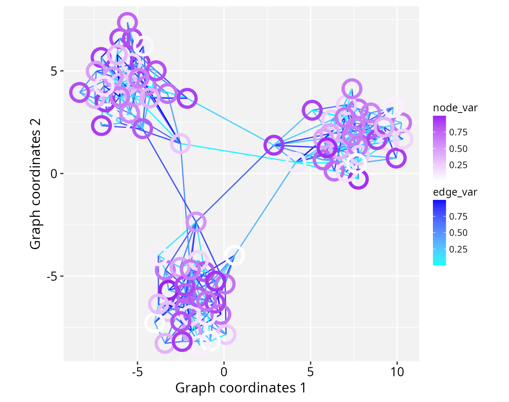

Customizing Aesthetics
Sysbiolab Team
2026-06-12
Source:vignettes/articles/customizing-aesthetics.Rmd
customizing-aesthetics.Rmd
Package: RGraphSpace 1.3.1
# Check required version
if (packageVersion("RGraphSpace") < "1.3.1"){
message("Need to update 'RGraphSpace' for this vignette")
remotes::install_github("sysbiolab/RGraphSpace")
}Overview
This section illustrates how RGraphSpace integrates with the
ggplot2 using geoms building blocks (Wickham 2016). Graph attributes stored within
the GraphSpace object can be handled in two ways:
Identity mapping: Graph attributes are interpreted as “identity values” (such as
nodeColor,nodeSize, ornodeShape) and are displayed exactly as they are, without further scaling or mapping.Dynamic aesthetic mapping: Graph attributes are mapped to aesthetics (such as
colour,size, andshape) and rendered through standard ggplot2 scales, which automatically generate synchronized legends.
To facilitate this integration, RGraphSpace implements three
specialized geoms designed to handle graph data types
within a ggplot2 workflow. These geoms use a
dual-anchor normalization approach to align layers, which is critical
for analysis where network elements must stay accurately referenced to a
spatial map or image.
-
geom_graphspace(): A high-level convenience layer that processes both nodes and edges in a single call. -
geom_nodespace(): Dedicated to rendering nodes. InheritsGeomPointaesthetic mappings, modified to inform the edge layer on node states. -
geom_edgespace(): Handles the relational data between nodes. InheritsGeomSegmentaesthetic mappings; unlike standard segments, it is “node-aware” and dynamically calibrates start and end points.
Setting basic input data
In the following example, we create a small modular graph containing
variables of different types to demonstrate how RGraphSpace
geoms handle different mapping requirements.
library("igraph")
library("ggplot2")
library("RGraphSpace")
# Make a toy modular graph
gtoy2 <- sample_islands(
islands.n = 3, # number of modules
islands.size = 30, # nodes per module
islands.pin = 0.25, # probability of edges within modules
n.inter = 2) # edges between modules
# Assign module membership to nodes
V(gtoy2)$module <- rep(1:3, each = 30)
# Assign colors to nodes
V(gtoy2)$nodeColor <- rainbow(3)[V(gtoy2)$module]
# Assign a categorical variable to nodes
V(gtoy2)$node_group <- c("A", "B", "C")[V(gtoy2)$module]
# Assign numeric variables to nodes and edges
V(gtoy2)$node_var <- runif(vcount(gtoy2))
E(gtoy2)$edge_var <- runif(ecount(gtoy2))
# Create a GraphSpace from the toy igraph
gs <- GraphSpace(gtoy2)Plotting identity values
In this example, nodeColor already contains the final
colour values stored in the GraphSpace object. The colours
will be displayed as-is by the geom_graphspace() function.
This approach is useful when nodes have been pre-processed with specific
color schemes and you want the visual output without further
mapping.
ggplot() +
geom_graphspace(colour = "grey", data = gs) +
theme(aspect.ratio = 1)
The trade-off on this approach is that, on one hand, all attributes
reflect the original data directly, but no legend is accessible. This is
because identity scales bypass the legend-building process of
ggplot2. If a legend is required to explain the meaning of
these colors, the attribute should be mapped via aesthetics (e.g.,
aes(fill = attribute)) and modified by a
scale_*() function.
Mapping categorical variables
In this example, the node categorical variable
node_group is mapped to the fill aesthetic. We
call geom_edgespace() and geom_nodespace() as
independent layers to provide maximum flexibility when mapping
aesthetics with legends.
ggplot(gs) +
geom_edgespace() +
geom_nodespace(aes(fill = node_group), colour = "grey") +
scale_fill_viridis_d(option = "viridis") +
theme_gspace_coords()
Mapping numeric variables
In this example, node and edge numeric variables are mapped to
fill and colour aesthetics, respectively.
# Map aesthetics to numeric variables
ggplot(gs) +
geom_edgespace(aes(colour = edge_var)) +
geom_nodespace(aes(fill = node_var), colour = "grey") +
scale_colour_continuous(palette = c("cyan","blue")) +
scale_fill_continuous(palette = c("white","purple")) +
theme_gspace_coords()
Using separate colour scales
If you need to map different variables to the same aesthetic (such as
colour) with independent scales, the ggnewscale
package offers an elegant solution to introduce additional scales within
the same plot (Campitelli 2025); for
example:
if (!require("ggnewscale", quietly = TRUE)) {
install.packages("ggnewscale")
}
library("ggnewscale")
ggplot(data = gs) +
geom_edgespace(aes(colour = edge_var)) +
scale_colour_continuous(palette = c("cyan","blue")) +
ggnewscale::new_scale_colour() +
geom_nodespace(aes(colour = node_var),
stroke = 2, fill = NA) +
scale_colour_continuous(palette = c("white","purple")) +
theme_gspace_coords()
Session information
#> R version 4.6.0 (2026-04-24)
#> Platform: x86_64-pc-linux-gnu
#> Running under: Ubuntu 24.04.4 LTS
#>
#> Matrix products: default
#> BLAS: /usr/lib/x86_64-linux-gnu/openblas-pthread/libblas.so.3
#> LAPACK: /usr/lib/x86_64-linux-gnu/openblas-pthread/libopenblasp-r0.3.26.so; LAPACK version 3.12.0
#>
#> locale:
#> [1] LC_CTYPE=en_US.UTF-8 LC_NUMERIC=C
#> [3] LC_TIME=en_US.UTF-8 LC_COLLATE=en_US.UTF-8
#> [5] LC_MONETARY=en_US.UTF-8 LC_MESSAGES=en_US.UTF-8
#> [7] LC_PAPER=en_US.UTF-8 LC_NAME=C
#> [9] LC_ADDRESS=C LC_TELEPHONE=C
#> [11] LC_MEASUREMENT=en_US.UTF-8 LC_IDENTIFICATION=C
#>
#> time zone: America/Sao_Paulo
#> tzcode source: system (glibc)
#>
#> attached base packages:
#> [1] stats graphics grDevices utils datasets methods base
#>
#> other attached packages:
#> [1] RGraphSpace_1.3.1 ggplot2_4.0.3 igraph_2.3.2
#>
#> loaded via a namespace (and not attached):
#> [1] sass_0.4.10 generics_0.1.4 tidyr_1.3.2 lattice_0.22-9
#> [5] digest_0.6.39 magrittr_2.0.5 evaluate_1.0.5 grid_4.6.0
#> [9] RColorBrewer_1.1-3 fastmap_1.2.0 jsonlite_2.0.0 Matrix_1.7-5
#> [13] ggrastr_1.0.2 purrr_1.2.2 viridisLite_0.4.3 scales_1.4.0
#> [17] textshaping_1.0.5 jquerylib_0.1.4 cli_3.6.6 rlang_1.2.0
#> [21] tidygraph_1.3.1 withr_3.0.2 cachem_1.1.0 yaml_2.3.12
#> [25] otel_0.2.0 ggbeeswarm_0.7.3 tools_4.6.0 dplyr_1.2.1
#> [29] vctrs_0.7.3 R6_2.6.1 lifecycle_1.0.5 fs_2.1.0
#> [33] htmlwidgets_1.6.4 vipor_0.4.7 ragg_1.5.2 pkgconfig_2.0.3
#> [37] beeswarm_0.4.0 desc_1.4.3 pkgdown_2.2.0 pillar_1.11.1
#> [41] bslib_0.11.0 gtable_0.3.6 glue_1.8.1 systemfonts_1.3.2
#> [45] xfun_0.58 tibble_3.3.1 tidyselect_1.2.1 rstudioapi_0.18.0
#> [49] knitr_1.51 farver_2.1.2 htmltools_0.5.9 rmarkdown_2.31
#> [53] labeling_0.4.3 compiler_4.6.0 S7_0.2.2